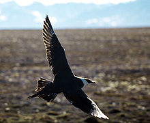
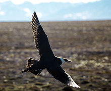

| Parasitic Jaeger | |
|---|---|
|  | |
| Conservation status | |
| Binomial name | |
| Stercorarius parasiticus (Linnaeus, 1758) |
| Parasitic Jaeger | |
|---|---|
|  | |
| Conservation status | |
| Binomial name | |
| Stercorarius parasiticus (Linnaeus, 1758) |
The Parasitic Jaeger, also known as the Arctic Skua or Parasitic Skua, (Stercorarius parasiticus) is a seabird in the skua family Stercorariidae.
This species breeds in the north of Eurasia and North America, with significant populations as far south as northern Scotland. It nests on dry tundra, higher fells and islands, laying up to four olive-brown eggs. It is usually silent except for newing and wailing notes while on the breeding grounds. Like other skuas, it will fly at the head of a human or fox approaching its nest. Although it cannot inflict serious damage, it is a frightening and painful experience. It is a migrant, wintering at sea in the tropics and southern oceans.
In the British Isles, they breed in Shetland and Orkney, the Outer Hebrides, Sutherland, Caithness, and some islands in Argyll.
This bird will feed on rodents, small birds and insects but also robs gulls and terns of their catches. Like the larger skua species, it continues this piratical behaviour throughout the year, showing great agility as it harasses its victims.
Identification of this skua is complicated by its similarities to Long-tailed Skua and Pomarine Skua, and the existence of three colour phases. This is one of the smaller skuas at about 41 centimetres (16 in) length, excluding the pointed central tail feathers of the summer adult, which can add another 7 centimetres (2.8 in) or so. Light phase adults have a brown back, mainly white underparts and dark primary wing feathers with a white "flash". The head and neck are yellowish-white with a black cap and there is a pointed central tail projection. Dark phase adults are dark brown, and intermediate phase birds are dark with somewhat paler underparts, head and neck. All phases have the white wing flash.
Juveniles are even more problematic, and are difficult to separate from Long-tailed Skua over the sea. They are bulkier, shorter-winged and less tern-like than that species, but show the same wide range of plumage variation. The flight is more falcon-like. However, they are usually warmer toned than Long-tailed, with browner shades, rather than grey.

{kind=link}
{kind=link}
{kind=link}